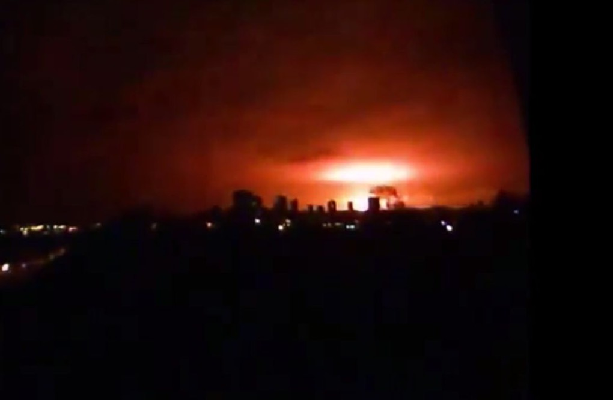
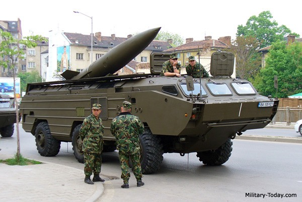
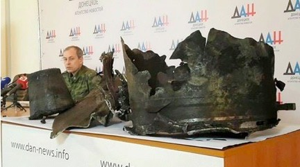
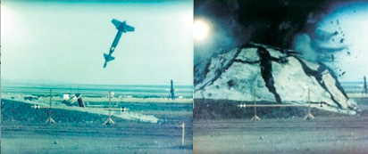
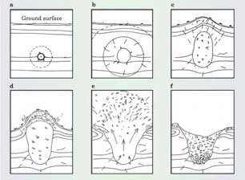
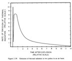
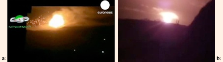

![20120724 - 7-24-2012 The More We Learn - quote from David Rockfeller -_thumb[2]](../../media/20120724---7-24-2012-the.jpeg)



FIG. 1: NUCLEAR BALLISTIC MISSILE ATTACK ON DONETSK. On Sunday February 8, 2015, at 10:50 PM local time, an unprecedented nuclear attack by Ukrainian government troops occurred in the city of Donetsk. The TOCHKA-U (SS-21 SCARAB) Soviet-era short range ballistic missile, armed with an AA-60 nuclear warhead with a selectable yield of 10-100 kt, was one of 50 TOCHKA-U missiles left in the Ukraine military arsenal after the collapse of the Soviet Union. For comparison the Hiroshima bomb had a yield of 20 kt, the first nuclear bomb to be dropped on a human population in Japan in 1945. [see FIG. 22] Source: J. Phillips, ”Did a tactical nuke just go off in Ukraine, big explosion rocks Donetsk”, Epoch Times, Feb. 8, 2015. http://www.theepochtimes.com/n3/1243441-did-a-tactical-nuke-just-go-off-in-ukraine-big-explosion-rocks-donetsk/
TOCHKA-U BALLISTIC MISSILE ATTACK ON CITY OF DONETSK: The TOCHKA-U ballistic missile was armed with a nuclear warhead, that detonated in a partially wooded industrial area, 1000 meters (0.6 mile) from the Donetsk State Factory of Chemical Products, in the Donetsk district of Kuibishevsky [FIG. 2(a)]. The nuclear blast left a crater 9.1 meter (30’) deep and 50 meters (164’) wide [FIG. 2(b)]. Trees surrounding the crater were stripped of leaves and snapped off like matchsticks from the powerful blast [FIG. 2(b), 21]. The high-energy shock wave shattered windows all over Donetsk, and was felt 30 km (18.6 miles) away.
FIG. 2(a): POWERFUL NUCLEAR MISSILE BLAST IN LARGEST CITY IN DONBASS. City of Donetsk map, with location of TOCHKA-U short-range ballistic missile blast, near a chemical plant in Kuibyshevsky District west of Donetsk. The nuclear blast occurred near midnight on February 8, 2015, in a wooded area. The explosion and shock wave broke glass windows and shook buildings all over Donetsk. Source: “The war in Novorossia Online 02.08.2015 Chronicle”, Feb. 2, 2015. http://en.voicesevas.ru/news/yugo-vostok/3484-the-war-in-novorossia-online-02082015-chronicle.html
FIG. 2(b): TWO DONETSK TOCHKA-U WARHEADS: SAME ROCKET DIFFERENT PACKAGE: The TOCHKA-U short-range Soviet era missile can be armed with a conventional warhead (crater on left), nuclear warhead (crater on right), or biological warhead. The width of the nuclear crater is about 5 times wider than for conventional warhead, and depth of crater from a nuclear warhead is about twice as deep. The lips of the craters are about 0.6m (2’) for conventional warhead compared to 3m (10’) high nuclear warhead or five times higher than for a conventional warhead. Source: (L) [eng subs] “Graham Phillips visited Tochka U strike scene (launch Oct. 18, 2014)”, G. Phillips, Jan. 26, 2015. https://www.youtube.com/watch?v=fgvfA2jOGvo; (R) “Tochka-U Missile Attack”, Channel 24 (RU), Feb. 9, 2014, https://www.youtube.com/watch?v=-C8GV63mnBU http://ukraineatwar.blogspot.com/2014/10/donetsk-hit-by-tochka-u.html
GERMAN INTELLIGENCE ESTIMATES 50,000 CASUALTIES IN 2014: A volunteer militia of ethnic Russian separatists, in the Donbass and Lugansk former oblasts (regions) have been fiercely fighting against the Ukrainian government forces, controlled by the illegal Kiev Junta, that overthrew democratically elected President Yanukovich one year ago.
VIDEO: LifeNews video: Graveyard on the Debaltsevo-Artemovsk highway. Feb. 16, 2015: http://www.liveleak.com/view?i=58b_1424079783 [08:46]
[English transcript: http://www.liveleak.com/view?i=58b_1424079783 ]
http://www.liveleak.com/view?i=58b_1424079783#zSF7td1OoscBwvys.99
VIDEO: LifeNews video: “Death on the Debaltsevo-Artemovsk highway” Feb. 15, 2015: http://lifenews.ru/news/149938 [05:55]
[English transcript: http://fortruss.blogspot.no/2015/02/lifenews-video-graveyard-on-debaltsevo.html]
FIG. 3: WAR ZONE OF NOVORUSSIA FEBRUARY 8, 2015. The Novorussia separatist region of conflict is indicated by darker red on the eastern Ukraine border with Russia. Dark red spots are cities, surrounded by villages heavily attacked by Ukrainian govt. troops. Lighter red indicates spreading local partisan activities, and increasing separatist movements throughout Ukraine. Approximately 8000 Ukrainian government troops, surrounded by militia, were trapped in the Debaltsevo caldron (dark gray area in center of conflict) since late January, unable to escape with supplies dwindling. Growing partisan resistance across Ukraine separated the Ukraine govt. troop zone from north to south at the northern border with Russia from Kharkov south to the Sea of Azov, trapping them in the area between there and the eastern border with Russia. The surprise encirclement of the govt. troops by the militia in the Debaltsevo cauldron created a state of panic in the pro-govt. troops, Kiev Junta, and U.S. government elites behind the civil war in Ukraine set up by Dick Cheney during the Cold War. Source: “The war in Novorossia Online 02.08.2015 Chronicle”, Feb. 2, 2015. http://en.voicesevas.ru/news/yugo-vostok/3484-the-war-in-novorossia-online-02082015-chronicle.html
Located in the eastern region of Ukraine bordering Russia, the Feb. 8, 2015, short-range ballistic nuclear missile attack on Donetsk, an ethnic Russian city, occurred in a war zone where German Intelligence recently estimated that 50,000 people have died in the past year (civilians, Ukraine govt. troops, mercenaries and Nazi gangs, and separatist volunteer militia). That is five times higher than the Kiev Junta and western media has been reporting for the entire year.
The German Intel information is an underestimate if the death rate of just one city, Ilovaisk, in August 2014, is considered; and the number of pro-Government soldiers who have died at Debaltsevo in February 2015. Two thirds of the 16,000 civilians living in the city of Ilovasik, were killed by the Ukrainian govt. troops in one battle with the militia, that lasted 3 weeks in Aug. 2014. At Debaltsevo cauldron in February 2015, at least 6500 pro-Government soldiers were killed. Additionally, President Poroshenko himself announced in late July 2014 that 15,000 soldiers had just “disappeared” and it was “unknown” what happened to them. It was discovered later by the militia that the Ukrainian army was throwing the bodies of their own dead soldiers into lakes in the war zone at night. The actual death rate for the past year could easily be double the 50,000 estimate.
PRIOR MISSILE ATTACKS ON A CHEMICAL PLANT:
FIG. 4: October 20, 2014, MISSILE ATTACK ON DONETSK CHEMICAL PLANT BY PRO-GOVERNMENT TROOPS. Fires and explosions of old munitions caused release of toxic chemicals into the atmosphere in the industrial area of the city of Donetsk, exposing the civilian population and soldiers downwind to unknown chemicals and radiation. Color changes in the smoke plume indicate different chemicals burning, mixing, interacting, and causing synergistic effects that multiply the toxicity of exposure to biological systems. When combined with the depleted uranium dust in the region, the synergistic effects are multiplied by combining complex chemical and radioactive materials. Source: YouTube – “Ukraine: Huge mushroom cloud over Donetsk as explosion rattles city”, https://www.youtube.com/watch?v=n1UdukqLrnk
Pro-government troops (Ukraine government troops and National Guard), are embedded with foreign mercenaries, Mossad, oligarch-hired thugs, Georgian and Chechen criminal gangs, extreme right fascist/Nazi Nationalists, US/EU/NATO advisors and “volunteers”, Blackwater and other US military personnel, and foreign mercenaries. The chemical plant had been attacked by Ukrainian govt. troops several times, on September 20, October 20 [FIG. 4], and in November 2014, with conventional weapons, causing large explosions and fires. Ukraine government troops deliberately exposed the separatist civilian population and volunteer militia to prolonged fires and releases of very large plumes of toxic chemicals, military explosives including depleted uranium, and other unknown chemical poisons.
⎯⎯⎯⎯⎯⎯⎯⎯⎯⎯⎯⎯⎯⎯⎯⎯⎯⎯⎯⎯⎯⎯⎯⎯⎯⎯⎯⎯⎯⎯⎯⎯
⎯⎯⎯⎯⎯⎯⎯⎯⎯⎯⎯⎯⎯⎯⎯⎯⎯⎯⎯⎯⎯⎯⎯⎯⎯⎯⎯⎯⎯⎯⎯⎯
RELIGIOUS WAR AGAINST ETHNIC RUSSIAN EASTERN ORTHODOX CHRISTIANS: Attacking civilian infrastructure in a heavily populated city with a short-range nuclear armed ballistic missile (AA-60 warhead has a 10-100 kt yield), is a war crime foreshadowing future wars in weaker countries that will be fought illegally with nuclear weapons, causing nuclear pollution and genocide of the population. This form of nuclear extermination, was planned and blatantly announced by the Kiev Junta as their genocide agenda for Russian speaking citizens in Ukraine over two years ago.

Percentage Of People With Ukrainian As Their Native Language.
Source: Alex Tora - Data from Ukranian census 2001, from "Population of those whose mother language is Ukrainian in Ukraine (2001)” http://en.wikipedia.org/wiki/Ukrainian_language#/media/File:Ukraine_census_2001_Ukrainian.svg
MACHINE GUN PUTIN AND NUKE 8 MILLION RUSSIANS IN UKRAINE:
Among the corrupt fascist Kiev politicians, former PM Yulia Tymoshenko (L), President Poroshenko, and Prime Minister Arseney Yatsenyuk, have specifically stated that the target of genocide is ethnic Russian Eastern Orthodox Christians in the richest industrialized region of Ukraine, where there are coalmines and undeveloped oil and gas deposits.
Israeli President Peres with Yulia Tymoshenko, Jan. 2007. Source: “Plaited Lady Out On The Offensive”, Kiev Ukraine News Blog, Jan. 25, 2007. http://news.kievukraine.info/2007/01/plaited-lady-out-on-offensive.html
Former Prime Minister Yulia Tymoshenko (President Obama’s preferred candidate to win the May 25, 2014 election), said in a tapped phone conversation [https://archive.today/jbTDP], leaked to the public on March 24, 2014:
“We must grab arms and go whack those damn katsaps [a Ukrainian word used to refer to the Russians in a negative tone] together with their leader … I’ll use all my connections, I’ll raise the whole world – as soon as I’m able to – in order to make sure… Bugger!... not even scorched earth won’t remain where Russia stand.”
Despite being incapacitated by spinal disc hernia the ex-PM stressed she’s ready to “grab a machine gun, you know what I’m saying, and go shoot this bastard [Putin] in the forehead.”
Asked, rhetorically, by her counterparty, "what should we do now with the 8 million Russians that stayed in Ukraine. They are outcasts". She replied: "They must be killed with nuclear weapons."
Source: www.youtube.com/watch?v=shG1b8DGnkU https://archive.today/jbTDP#selection-1393.140-1401.1
⎯⎯⎯⎯⎯⎯⎯⎯⎯⎯⎯⎯⎯⎯⎯⎯⎯⎯⎯⎯⎯⎯⎯⎯⎯⎯⎯⎯⎯⎯⎯⎯
International Criminal Tribunal for Iraq (Kuala Lumpur)
War Crimes Complaint, November 5, 2010,
By Leuren Moret, p. 63.
Overt and covert pressure for new nuclear weapons was driven by: (1) politicians - who fund wars to secure natural resources in weaker third world countries, for the international bankers; (2) by the military – whose job is to kill people and destroy things, and since WW II to carry out depopulation of civilians, and (3) leaders at the nuclear weapons labs – who have a vested interest in continuing development of nuclear weapons in order to guarantee their own job security.
⎯⎯⎯⎯⎯⎯⎯⎯⎯⎯⎯⎯⎯⎯⎯⎯⎯⎯⎯⎯⎯⎯⎯⎯⎯⎯⎯⎯⎯⎯⎯⎯
US PRESIDENTIAL AND CONGRESSIONAL WAR CRIMINALS: On numerous occasions in the past year, President Obama with some members of Congress, threatened to provide “lethal weapons” to the Kiev Junta, and Sec. of State John Kerry provided mini-nukes to the Kiev Junta in November 2014, as well as other advanced military weapons and advisors.
SEE: “Intel: US Mini-Nukes Delivered to Ukraine; Poroshenko’s Family Urgently Leaves the Country”, futuristrendcast.wordpress.com, February 17, 2015. https://futuristrendcast.wordpress.com/2015/02/17/intel-us-mini-nukes-delivered-to-ukraine-poroshenkos-family-urgently-leaves-the-country/
President Obama and Congress are fully aware that many of the weapons such as depleted uranium, nuclear warheads over 5 kt, 4th generation nuclear weapons, and exotic weapons such as D.I.M.E. (see paper and 2 of its refs. below) violate International, Federal, and military law:
KEY PAPERS ON D.I.M.E. - Dense Inert Metal Eplosive
J. Kalinich et al.: Embedded Weapons-Grade Tungsten Alloy Shrapnel Rapidly Induces Metastatic High-Grade Rhabdomyosarcomas in F344 Rats, Armed Forces Radiobiology Research Institute, 2005. http://ehp03.niehs.nih.gov/article/fetchArticle.action?articleURI=info:doi/10.1289/ehp.7791
Reference: Gilman JPW 1962. Metal carcinogenesis. II. A study on the carcinogenic activity of cobalt, copper, iron, and nickel compounds, Cancer Res 22:158–165.13898693
Reference: Tomasovic SP, Coghlan LG, Gray KN, Mastromarion AJ, Travis EL 1988. IACUC evaluation of experiments requiring death as an end point: a cancer center’s recommendations, Lab Animal 17:31–34.
Since 1990 when the Iraq war started, Congress (most members are lawyers) has been repeatedly informed of the lethal impact of weapons newly introduced by President George H.W. Bush in Iraq: depleted uranium, tactical battlefield nuclear weapons, 4th generation nuclear and other exotic weapons. Later D.I.M.E. was introduced as a metal alloy added to munitions that causes 100% tumorgenesis and cancer deaths in 9 months. Extensive testimony in Congress since 1990, has grimly reported the genocidal public health and environmental effects on the Iraqi people and U.S. troops. Depleted uranium has also had a global effect [FIG. 5-8]. Under US Federal Code Title 50, Chapter 40 Sec. 2302, weapons that qualify under any of the three categories listed in the code, are in violation of war conventions, international law and agreements, U.S. Federal law, and military law, but this is ironically dismissed by the “Rule of Law” Obama administration.
VIDEO: “Ukrainian Deputy: US to stage a civil war in Ukraine!” Nov. 20, 2013. [This was before Maidan. (english subtitles/transcript)] http://www.liveleak.com/view?i=223_1423050540#1sEOx4UgS8whjGVs.99
As the Obama administration knowingly repeats violations of US and International Law, as well as CIA mishandling and misguidance of the illegal Kiev Junta, and CIA funding of the extreme right Nazi and fascist groups since WW II ended, the result has not worked out well for the U.S. or for the Russian-speaking citizens in the war zone many of whom were killed, injured, and/or had houses destroyed. U.S. Secretary of State John Kerry’s foreign policy and “clever scheme” for Ukraine, enhanced by President Poroshenko’s “magical thinking”, has resulted in an acceleration in the number of deaths (at least 50,000 for 2014), the financial chaos and collapse of Ukraine, and growing awareness and outrage in Ukraine and across the globe, at the humanitarian disaster in Novorussia.
PUTIN’S COURSE OF INTERNATIONAL LAW AND DIPLOMACY: In comparison to President Obama’s policy in the Ukraine of brute force, racketeering and extortion, and blackmail of Chancelor Angela Merkel, Russian President Vladimir Putin has followed a cautious and conservative course of diplomatic negotiations, demanding strict adherence to international law. He has been providing scheduled humanitarian convoys of goods to victims in the war zone, and to families of coalminers who died in an explosion on March 2, 2015.
SEE: “Ukraine coal mine: Dozens feared dead in Zasyadko gas blast”, BBC, March 4, 2015. http://www.bbc.com/news/world-europe-31725243
The separatists, who make up the volunteer militia, are winning on the battlefield, and in the court of public opinion. They have also created a new global awareness of the rising fascist Nazi movements in European countries, funded by the CIA since the end of WW II. They are part of GLADIO now secretly under NATO, as a leave-behind-army the US set up in Europe in 1945.
UKRAINE GENOCIDE BANKRUPTING THE ‘ATLANTICISTS’: In contrast, the US brute force agenda pursuing an arrogant doctrine of WMD and nuclear genocide by targeting the civilian population in Novorussia, has not won the war on the battlefield or public opinion for the “North Atlantic” globalists. In fact, geopolitically, the Ukraine crisis has bankrupted the EU and NATO, and drained the U.S., but had little negative effect on Putin and Russia. In fact the Ukraine crisis has strengthened Putin’s position internally and internationally, boosted diversification of Russia’s sources for commodities, turned Russia internally to self-sufficient manufacture of military hardware and food production, and expanded global partnerships with new trading opportunities and markets in the energy sector.
SANCTIONS BACKFIRE AS RUSSIA DIVESTS FROM THE WEST: The stabilization of the Russian Federation as a consequence of global media attacks, sanctions, and demonization of Russia and Putin by western economic interests, has caused an unexpected benefit – a Russian Renaissance unifying the Federation, while backfiring on western economic critics. Imposition of western sanctions based on fraudulent statements, is changing global public perception. The global media attacks on Putin have showcased BRICS as a new international banking system that gives hope to people and economies around the world strangled by western bankers, and the new younger and stronger leaders. Alexis Tsipras (Greece), Matteo Renzi (Italy), and countries like Slovakia and Hungary are now standing up to that corrupt banking system. It also tarnishes and further exposes the diabolical partnership of the Anglo-American permanent war crimes racketeering syndicate, a far more ruthless criminal global network than the Kiev Junta with their ties to Mossad/Israel and the CIA “Wall Street mafia”.
⎯⎯⎯⎯⎯⎯⎯⎯⎯⎯⎯⎯⎯⎯⎯⎯⎯⎯⎯⎯⎯⎯⎯⎯⎯⎯⎯⎯⎯⎯⎯⎯
International Criminal Tribunal for Iraq
War Crimes Complaint, November 5, 2010
By Leuren K. Moret, p. 63.
At the time of the push for indefinite extension of the NPT in 1995, hypocritically President Clinton renewed the declaration of negative security assurances‘ to 170 non-nuclear countries (the rest of the world except the nuclear states). The US government insisted that the declaration was legally non-binding, however the International Court of Justice (ICJ) found it legally binding:
The United States reaffirms that it will not use nuclear weapons against non-nuclear-weapon States except in the case of an invasion or any other attack on the United States, its territories, its armed forces or other troops, its allies, or on a State toward which it has a security commitment, carried out or sustained by such a non-nuclear weapon State in association or alliance with a nuclear weapon State.
⎯⎯⎯⎯⎯⎯⎯⎯⎯⎯⎯⎯⎯⎯⎯⎯⎯⎯⎯⎯⎯⎯⎯⎯⎯⎯⎯⎯⎯⎯⎯⎯
POLITICIANS WITH VESTED INTERESTS: Through the son of Vice President Joe Biden, and stepson of Secretary of State John Kerry, both politicians are linked to lucrative international oil companies and mineral contracts in the Novorussia war zone. After the battle in the Debaltsevo cauldron forced Ukraine govt. troops out, it was discovered that Ukrainian govt. troops occupying an area in the Debaltsevo region for the past year, had been protecting U.S. foreign interests prospecting, conducting seismic studies, and drilling for oil and gas in villages in the govt. troops occupied war zone. Thirty to forty U.S. manufactured trucks, seismic and drilling equipment, and living quarters (trailers) were camped with the Ukraine National Guard at the exploration site near Shishkovo village. The exploration company NADRA was working for Chevron and Royal Dutch Shell through contracts oligarch Igor Kolomoisky had negotiated.
Both Biden and Kerry are indirectly vested in the Chevron and Royal Dutch Shell holdings via family members, through criminal oligarch Igor Kolomoisky, owner of the PrivatBank involved with the oil companies. Biden and Kerry family members sit on the BOD of PrivatBank. Kolomoisky, a dual Israeli Ukrainian citizen, funds and controls three of the most criminally independent battalions embedded with pro-government troops in the ongoing war. He is involved in organ trafficking of citizens kidnapped by battalions in the war zone, where he sent refrigerated trucks to the battlefield to pick-up harvested organs. In abandoned govt. troop camps, lists with medical records of specific citizens targeted for organ harvesting, were found by the militia.
Opposition to fracking (involving Kominoisky), by Chevron and Royal Dutch Shell oil companies in Novorussia, triggered the separatist movement in eastern Ukraine in April 2014.
"Now we know that US weapons intended for Ukraine are actually intended to defend US energy interests, and the weapons are simply needed to silence the annoying Russian locals, who dare to speak out against the destruction of local ecology, the profits from which no one even planned to share …
Kristina Rus, March 3, 2015
Source: K. Rus, “Ukrainian army leaves American fracking equipment behind after retreating from Donbass”, freeukrainenow.org, March 3, 2015. http://freeukrainenow.org/tag/shishkovo/ VIDEO:_https://www.youtube.com/watch?v=a4sk-WJAr4I
Strong opposition by citizens to poisoning the water supply by fracking eastern Ukraine, as well as strong resistance by the separatists to the CIA coup and installation of the illegal Kiev Junta in February 2014, led to the present conflict. US politicians VP Biden and Sec. of State Kerry, indirectly but personally vested in the oil and gas contracts, encouraged and supported the war.
UPDATE: The NADRA group has recently rebranded itself as TUTKOVSKY and is now registered in Nicosia, Cyprus, under Ukraine, UK, and Russian ownership:
The second important reason for this re-branding is that there are already more than 50 companies using NADRA as their brand. Some of them operate in oil & gas exploration and production and provide related services. Such situation made us a lot of problems during last decade as not only good but also bad news have been frequently imputed to our company as a leading Ukrainian service company.
Source: http://nadragroup.com/
IQ DECLINE IN EUROPE - HUMAN COST OF DEPLETED URANIUM POISON DUST FROM WARS IN IRAQ, YUGOSLAVIA, AND AFGHAN: In Ukraine few people are aware that nuclear weapons are not just indiscriminate killers (WMD) of the targeted ethnic Russians, but also all Ukrainians, non-citizens, Christians, Jews, Muslims, and all living things on and off the battlefield throughout Ukraine and across all borders. Radiation respects no borders [FIG. 5(a)], no socio-economic class, and no religion. It is an equal opportunity killer. For example, [FIG. 5(b)] presents UK govt. data on uranium levels detected in the British atmosphere from 1998-2003, from depleted uranium, 4th generation nuclear weapons, and other lethal weapons used by US and UK forces in Iraq and Afghanistan.
FIG. 5(a): RADIATION-CAUSED DECLINE IN IQ BY COUNTRY: FROM BOMB TESTING, AND IN NUCLEAR CONTAMINATED WAR ZONES: Bomb testing contamination lowered IQ in Ireland and Portugal. NATO attacks on Yugoslavia with DU caused the greatest decline in IQ in areas of heaviest fighting (darkest red areas Bosnia and Herzegovina, Montenegro, and Albania). Wars in Iraq and Afghanistan contaminated the eastern Mediterranean and US [FIG. 8]. And Chernobyl had a large effect on Eastern Europe. The U.S. has the highest rate of mental illness in the world (26% of the population) due to 1300 nuclear bomb tests the US govt. conducted in Nevada [FIG. 13].
Source: MAP: http://www.theapricity.com/forum/showthread.php?70485-Interesting-Map-about-Europe-s-IQ; “Intelligence: A Unifying Construct for the Social Sciences, R. Lynn and T. Vanhanen (2012). https://lesacreduprintemps19.files.wordpress.com/2012/08/intelligence-a-unifying-construct-for-the-social-sciences-richard-lynn-and-tatu-vanhanen.pdf

FIG. 5(b): DEPLETED URANIUM IN THE BRITISH ATMOSPHERE 1998-2003: The British nuclear weapons facility at Aldermaston reported depleted uranium in the atmosphere measured between April 4, 1998-November 6, 2003. There should be no uranium in the air. The largest peaks required official warnings to the UK government, during Tora Bora bombing of Afghanistan and the 2003 Iraq war, but the U.K. government officially denied it to the public. This graph does not include fission products produced by 4th generation nuclear weapons and tactical battlefield nukes introduced to the battlefield in Iraq and Afghanistan. Source: Busby, C., Morgan, S., “Did the use of Uranium weapons in Gulf War 2 result in contamination of Europe? Evidence from the measurements of the Atomic Weapons Establishment (AWE), Aldermaston, Berkshire, UK”, Sunday Times Online, February 19, 2006. ../../media/fig13-uran-aldermaston.jpeg
The poison dust from war zones in the Middle East and Central Asia arrived 5-7 days later from Iraq and Afghanistan, poisoning the Mediterranean, Europe, and beyond. Increases in sudden infant death syndrome (SIDS) were reported in medical journals in 20 regions of Europe following the 1995 NATO attack on Afghanistan.

URANIUM 238 PARTICLE IN A CLOUD CHAMBER: High energy alpha tracks (tear shaped) and electron tracks (narrow tracks) are ejected from the Uranium nucleus and under the right conditions, a single track can cause cancer. (animated image)
Source: R. Gray, “The invisible world of RADIATION revealed: Cloud chamber lets you watch the patterns produced as uranium decays”, DAILY MAIL, March 12, 2015. http://www.dailymail.co.uk/sciencetech/article-2991818/The-invisible-world-RADIATION-revealed-Cloud-chamber-lets-scientists-watch-patterns-produced-uranium-decays.html
Ms. Moret linked the unexplained sudden deaths, to US and British depleted uranium weaponry, in her 2010 Kuala Lumpur War Crimes Complaint [International Criminal Tribunal for Iraq, Nov. 5, 2010, p.89]:
In 2004, the British medical journal Lancet reported sudden increases in unexplained infant deaths in 20 regions of Europe that began about 1990, when depleted uranium weaponry was introduced for the first time to the battlefield, by the US and the UK, in Gulf War I in Iraq.
Source: Carpenter, R.G. et al., “Sudden unexplained infant death in 20 regions in Europe: case control study,” Lancet, Vol. 363, Jan. 17, 2004, pp. 185-191.
Carpet bombing with depleted uranium, U.S. use of D.I.M.E., depleted uranium in all munitions during the attacks, and other lethal weapons caused illnesses and deaths in Yugoslavia, and infant deaths and illnesses in larger regions throughout Europe. [FIG. 6 right]
FIG. 6: 2007 EU PUBLIC DEBT INCREASES AS POPULATION SHARPLY DECLINES. (L) From gradual to a sharp increase that began in 2007, European public debt has increased rapidly in parallel with (R) the working age population (15-64) that sharply declined for the same time period 2007-2013. The use of D.I.M.E. added to depleted uranium weapons in the Iraq and Afghanistan wars is the most likely cause. Source: T. Durden, “Why Europe's Doomsayers Are Right, In One Chart”, ZeroHedge.com, Sept. 30, 2014. http://www.zerohedge.com/news/2014-09-30/why-europes-doomsayers-are-right-one-chart
EXCESS DEATHS FROM CAMEL ‘PLAGUE’, SUDDEN INFANT DEATH SYNDROME, CHRONIC ILLNESSES: [See FIG. 6 for period 2006-2013] In May and June 2007, there were also very large numbers of unexplained camel deaths in the Middle East and N. Africa, with 3-5000 deaths in Saudi Arabia alone.
SEE: R. McKie, “Camel 'plague' puzzles scientists”, TheGuardian.com, Dec. 22, 2007. http://www.theguardian.com/science/2007/dec/23/animalbehaviour.scienceofclimatechange
The main cause of excess deaths in humans and animals in the Middle East and Europe [FIG. 6 right] had to have an environmental cause. An Iraqi missile attack on the munitions depot at U.S. Forward Operating Base Camp Falcon in Baghdad, caused $1 billion worth of depleted uranium munitions (all the DU munitions the US had in Iraq) to burn for days. This caused heavy pollution of neighboring regions with uranium dust, and was even detected in drinking water in Los Angeles indicating it was global [FIG. 7]. The Iraq and Afghan wars have contaminated the Sahal Desert with radioactive particles, and millions of tons of Saharan dust is carried around the world each year, mixing the smog of all wars globally in one year.
VIDEO: “NASA | Satellite Tracks Saharan Dust to Amazon in 3-D” https://www.youtube.com/watch?v=ygulQJoIe2Y&spfreload=10
The long-term effects of depleted uranium and nuclear weapons, from wars in Iraq and Afghanistan, have irreversibly devastated the European economy [FIG. 6]. The Chernobyl disaster in 1986, was a False Flag staged to collapse the Soviet economy, and end the Cold War in 1991. It also had a pronounced global effect and reduced fertility in some regions (for example Iran) by one child per woman.
URANIUM CONTAMINATION IN LOS ANGELES DRINKING WATER:
FIG. 7: DEPLETED URANIUM IN LOS ANGELES DRINKING WATER 1999-2008: The City of Los Angeles Department of Water and Power has reported uranium levels in drinking water since 1999. Large increases in uranium contamination of drinking water correlate with uranium wars in Iraq and Afghanistan, and very large increases in diabetes nationwide [FIG. 8]. Source: Leuren Moret (graph), May 5, 2010. "Data from Annual Water Quality Reports (1999-2008)," Los Angeles Dept. of Water and Power. currents/fukushima-impact-of-fallout.html
The destruction of the global environment by contamination with pernicious poisons from nuclear materials used on and off the battlefield since 1990 in Iraq, and since 2001 in Afghanistan, is permanent [FIG. 7]. Radioactive nanoparticle dust is carried on air currents throughout Europe and the northern hemisphere within days. Atmospheric convective mixing throughout the entire global biosphere occurs in one year, causing a global decline in fertility and accelerated depopulation due to nuclear pollution.

FIG. 8: DIABETES INCREASES IN THE UNITED STATES 1958-2000:
(L) Diabetes reported by prevalence (left axis) and incidence in millions (right axis), correlates with bomb testing, nuclear power, and U.S. wars for oil in Iraq, and for opium in Afghanistan. (R) A large increase in diabetes nationwide for the decade 1990-2000 strongly correlates with increases in uranium in the British atmosphere and in Los Angeles drinking water for the same period. Source: Engelgau, M. et.al, “The Evolving Diabetes Burden in the United States,” Annals of Internal Medicine, June 1, 2004, v.140, no.11, pp. 945-950.
GLOBAL TABOO COVERTLY LIFTED BY KISSINGER ON NUCLEAR WEAPONS: As mentioned, the introduction of previously taboo radiological and nuclear weapons on the battlefield in 1990, was by President George H.W. Bush in Iraq. A new form of warfare emerged with depopulation and infertility as the new agenda for wars, concepts developed by U.S. Secretary of State Henry Kissinger in the 1970’s, through his State Department Office of Population Affairs. In fact he made depopulation official U.S. National Policy, and the top priority of Foreign Policy. Kissinger stated at a National Security Council meeting on Dec. 10, 1974, that overpopulation was a greater threat than nuclear war, and that depopulation would be used in third world countries where minerals were located that were needed to maintain U.S. hegemony.
National Security Study Memorandum 200: Implications of Worldwide Population Growth for U.S. Security and Overseas Interests (NSSM200), http://pdf.usaid.gov/pdf_docs/PCAAB500.pdf http://en.wikipedia.org/wiki/National_Security_Study_Memorandum_200
FORENSIC EVIDENCE: TOCHKA-U NUCLEAR WARHEAD AND YIELD
Memo to General Leslie Groves (classified)
Oct. 30, 1943, Manhattan Project
The military purpose for radiological weapons suggested for development in 1943, was to cause permanent contamination of terrain, atmosphere, food and drinking water, and biological systems that would result in depopulation. Source: Conant, J.B., A.H. Compton, H.C. Urey, ―”Memo to General Leslie Groves” (classified), Oct. 30, 1943, Manhattan Project, U.S. Government document. http://www.mindfully.org/Nucs/Groves-Memo-Manhattan30oct43.htm
INTRODUCTION:

The Tochka short-range ballistic missile can carry conventional, chemical or nuclear warheads
FIG. 9: KIEV VERSION OF GLOBAL “NUCLEAR KABUKI THEATER” IN EASTERN UKRAINE. The illegal Kiev Junta has nuked the pro-Russian separatist population in eastern Ukraine for the past year with: (1) hundreds of thousands of tons of depleted uranium poison gas weapons (800 tons of DU is the atomicity equivalent of 83,000 Nagasaki Bombs), (2) three serious reactor explosions caused by using Westinghouse nuclear fuel rods (wrong size) in Soviet-era reactors at two nuclear power plants, (3) digging up buried Soviet era nuclear waste for dispersal on the population in war zone, (4) downed Malaysian Airlines flight MH 17 with a fighter jet depleted uranium missile and from the ground a BUK depleted uranium missile, (5) a HAARP manipulated Fukushima nuclear typhoon attack on eastern war zone with radiation,(6) and a TOCHKA-U nuclear ballistic missile strike on the largest city in Donbass. Source: Image – Military-Today.com; “Intel: US Mini-Nukes Delivered to Ukraine; Poroshenko’s Family Urgently Leaves the Country”, futuristrendcast.wordpress.com, February, 17, 2015. https://futuristrendcast.wordpress.com/2015/02/17/intel-us-mini-nukes-delivered-to-ukraine-poroshenkos-family-urgently-leaves-the-country/
In November 2014, Jesuit trained Secretary of State and Hapsburg Empire HofJudah (Court Jew) John Kerry transferred 4 mini-nukes to Ukraine after President Poroshenko (Russian Mafia) made a personal visit to Washington D.C., with an urgent request to Congress and CIA Jesuit President Obama, for “lethal weapons”. When the war started in April 2014, Poroshenko had at least 50 Soviet era TOCHKA-U missiles in the military arsenal.
Source: “Intel: US Mini-Nukes Delivered to Ukraine; Poroshenko’s Family Urgently Leaves the Country”, futuristrendcast.wordpress.com, February, 17, 2015. https://futuristrendcast.wordpress.com/2015/02/17/intel-us-mini-nukes-delivered-to-ukraine-poroshenkos-family-urgently-leaves-the-country/
ASHEN FACED ANNOUNCEMENT OF AA-60 NUCLEAR WARHEAD: On the morning after the midnight Kiev Junta missile strike on Donetsk, ashen-faced and visibly shaken by the news he was about to present, Donbass Assistant Minister of Defense Eduard Basurin held the first press conference about the Kiev Junta missile strike. He indicated that a TOCHKA-U (NATO - SS-21 SCARAB) Soviet-era short-range ballistic missile was “probably the delivery system”, and that it may have been armed “with an AA-60 nuclear warhead”. The AA-60 nuclear warhead, with a variable 10-100 kt yield can be adjusted just before launch, Mr. Basurin said was “most likely fired by Ukrainian government troops” because the Novorusia militia did not have any. What is important to remember is that the TOCHKA-U is a short-range ballistic missile with 3 different warhead options: conventional, biological, and nuclear. The selectable 10-100 kt, blast yield of the TOCHKA-U nuclear warhead is much more powerful and destructive than tactical battlefield nuclear warheads [FIG. 2(b)]. Tactical nukes are limited to 5 kt or less, and leave a small smoke column [FIG. 13], not the easily identifiable mushroom cloud.
Images [FIG. 18] taken of the missile blast in Donetsk close to midnight on Feb. 8, 2015, suggest that the Donetsk TOCHKA-U carried a nuclear warhead. Images from citizen sources show a nuclear blast with a characteristic fireball and mushroom cloud [FIG. 1,15]. However most of the sources of the images have not been identified. Until careful physical radiation measurements have been made around the crater and region, and radiation exposure of residents has been surveyed in the region, the investigation of the nuclear missile strike is incomplete and/or is a coverup. The parameters of the scientific phenomena seem to be internally consistent indicating it was a nuclear warhead and detonation in Donetsk on the night of Feb. 8, 2015. It cannot be a random nuclear missile attack, but must be related to retaliation by government troops for the encirclement of 8000 soldiers in the Debaltsevo cauldron. And capture of the village Logvinovo gave the militia control of the only route (the highway Artyomovsk-Debaltsevo) out of the cauldron. More than 6500 govt. soldiers and mercenaries were then killed, and the militia gained war trophies that comprised 25% of govt. hardware: tanks, APCs etc., big artillery, and huge amounts of munitions from abandoned weapons depots.

FIG. 10(a): TOCHKA-U MISSILE FAILED TO EXPLODE OUTSIDE LOGVINOVO LAUNCHED BY GOVT. SOLDIERS KILLED TRYING TO BREAK OUT OF CAULDRON, FEB. 2015. (L) Short-range ballistic missile launched by desperate exhausted Ukrainian troops attempting to break out of Debaltsevo cauldron near key village of Logvinovo. (R) Satellite photo of the consequences of attacks on Logvinovo on the highway Artyomovsk-Debaltsevo, dead and frozen soldiers everywhere lying on snow. Out of 8000 govt. soldiers trapped in the Debaltsevo cauldron, 6500 were killed and nearly every soldier that survived was wounded. Source: “The war in Novorossia Online 02.28.2015 Chronicle”, Voice of Sevastopol.com, Feb. 28, 2015. http://en.voicesevas.ru/news/yugo-vostok/3556-the-war-in-novorossia-online-02282015-chronicle.html VIDEO: “Ukraine: Bloody aftermath of DPR’s battle for Logvinovo” [Ukraine: Ukrainian Army officers ambushed, wounded, interrogated] *GRAPHIC* https://www.youtube.com/watch?v=QtbD0xIB8v0 [01:15]
Although all nuclear weapons were required to be turned over to the Russian government when the Soviet Union collapsed, many ended up on the international nuclear black market (Turkey), or as the TOCHKA-U evidence in Ukraine now reveals, the transfer back to Russia never occurred. Fifty of the TOCHKA-U Soviet era ballistic missiles were still stockpiled in the Ukrainian government military arsenal when hostilities started in April 2014. During hostilities earlier in the summer of 2014, the Ukrainian government troops had fired 3 conventional TOCHKA-U missiles on the same day at Novorussia civilian targets, and launched one into Russia as provocation. The Novorussia militia and the Russian border defense each shot down an incoming TOCHKA-U, and the third one landed on the ground in Novorussia but failed to explode.
A SECOND PRESS CONFERENCE ON TOCHKA-U: Several days after the February 8, 2015, TOCHKA-U ballistic missile attack on Donetsk, the Assistant Minister of Defense Eduard Basurin, held a second press conference to report on the official investigation, and displayed debris from a TOCHKA-U missile conventional warhead blast. This was not from the Feb. 8 attack because the missile is vaporized in the nuclear blast. He said that further investigation had confirmed that a TOCHKA-U ballistic missile, possibly armed with a nuclear warhead, was fired by Ukrainian troops while attacking Donetsk civilian industrial infrastructure on the night of Feb. 8, 2015.

FIG. 10(b): TOCHKA-U MISSILE DEBRIS FROM WARHEAD BLAST: Assistant Minister of Defense Eduard Basurin, held a second press conference on the nuclear blast in Donetsk, and displayed missile debris from a warhead blast. Source: Eduard Basurin update on TOCHKA-U nuclear missile, Voice of Sevastopol. https://youtu.be/w_JWdDosgLM
INTERNATIONAL SCIENTIFIC EXPERT ON NUCLEAR WEAPONS: The author, Ms. Leuren Moret (LeurenMoret.info) worked as a staff scientist in two U.S. nuclear weapons labs, and is an international war crimes scientific expert witness on radiological, nuclear, 4th generation nuclear, and exotic weapons. She participated in 4 International War Crimes Tribunals: International Criminal Tribunal for Afghanistan (Tokyo), International Criminal Tribunal for Iraq (Istanbul), International Criminal Tribunal for Iraq (Kuala Lumpur), and informally on the International Criminal Tribunal for Palestine (Kuala Lumpur). Ms. Moret’s expertise in nuclear weapons has been used below in the analysis of the Donetsk ballistic missile attack.
For reference in assessing nuclear explosion phenomena below, the classic Department of the Army Pamphlet, The Effects of Nuclear Weapons, by S. Glasstone and P.J. Dolan (1977), has been used and can be found online (below) for those interested in learning more. Chapters are available online on a Chinese military website with a simple search. http://nnsa.energy.gov/sites/default/files/nnsa/inlinefiles/glasstone%20and%20dolan%201977.pdf
RUSSIAN/SOVIET VERSUS U.S. WEAPONS SYSTEMS: In general, Russian/Soviet and U.S. weapons systems are very different. Russian/Soviet weapons systems are expediently designed to maximize effect and minimize difficulties of assembly and price. U.S. weapon systems are over designed, with too much detail to precision (due to overfunding of military budgets), lack of practicality from the onset (making systems temperamental), and wrong priorities based for example, on benefits to Congressional committee members taking government funds (“pork”) back to their states. In that illogical and bizarre process of “weapons design by Congressional committee”, manufacturing is distributed across Congressional districts by political will, and manufactured parts from many states must fit together and operate correctly. For these reasons, the Russian/Soviet conventional weapons and nuclear designs are more practical and efficient than U.S. designs. However when the scientific constraints are considered in any investigation, comparisons can be made despite design differences in Soviet/Russian and U.S. systems. The principles of nuclear explosion phenomena - physics, scientific constraints, atomicity, physical processes of the blast, and physical characteristics of a nuclear detonation in general - are similar whether it is a Russian/Soviet or U.S. nuclear warhead as described below.
An analysis of the forensic evidence gathered from the Donetsk TOCHKA-U short-range ballistic missile nuclear strike will determine many things about the nature of the warhead.
THE FINAL PIECE OF EVIDENCE MISSING: It remains to be determined whether or not radioactive fission and neutron activation products from a nuclear detonation were detected and measured. The most critical evidence that has been suppressed, and hardly mentioned in any news source, is with respect to the Donetsk TOCHKA-U warhead blast. The absence of confirmation or denial, of fresh fission products detected at the crater site, is a serious omission of sensitive and critical data regarding nuclear pollution potentially exposing a large populated area in Donbass. Considering that there is a global effect as well, it suggests an international cover-up, similar to the aftermath of Chernobyl, and the recent very large unreported release of radiation from two reactor explosions on the night of November 27, 2014, at the Zaporhyzne nuclear power plant [FIG. 25, 26, 27].
NUCLEAR EXPLOSION PHENOMENA:
MISSILE IMPACT

FIG. 11: NEVADA TEST SITE MISSILE TEST. “The conventional laser-guided missile, after smashing into a hardened concrete bunker, penetrated 2-4 meters (6.6’-13’) before detonating its 240-kg high-explosive warhead. Even the best earth-penetrating weapons reach depths of only about 6 meters (19.7 feet). This explosion clearly was not contained by its surrounding cap of concrete, and left a crater 5 meters (16.4’) wide. Source: Photos courtesy of the U.S. Defense Threat Reduction Agency." Source: R.W. Nelson, Nuclear Bunker Busters, Mini-Nukes, and the US Nuclear Stockpile, Physics Today (2003). http://pauldavidtuff.com/PDF%20Files/Nuke%20Bunker%20Buster.pdf
MISSILE IMPACT PHENOMENA: In a paper published by Robert W. Nelson, “Nuclear Bunker Busters, Mini-Nukes, and the US Nuclear Stockpile,” in Physics Today (November 2003), the sequence of events in the detonation of a nuclear explosion is explained by the diagram in [Fig. 12]. In the U.S., nuclear warheads on missiles are designed to explode in the air or when they touch the ground. In the air, in either case, only a small fraction of the total yield (total energy released) is transferred as seismic energy by the blast wave, into the ground. A mechanical impedance mismatch occurs from the large density difference between the air and ground and has a large influence on the total yield of the warhead.

FIG. 12: A Shallow-Buried Underground Nuclear Explosion. (a-b) The underground nuclear detonation generates a strong shock wave that vaporizes a cavity of rock with an initial radius 2W1/3 m and melts rock out to roughly twice this distance. (c-f) There is little post-shock heating beyond the melt radius, but the shock is strong enough to crush rock approximately 12 times farther away, at 50W1/3 m. The cavity gases continue to cool rapidly as the cavity expands. A combination of gas acceleration and the compression and rarefaction phases of the seismic wave ejects materials contaminated with fresh fission products out of the crater at the surface. Source: N. M. Short, "The Definition of True Crater Dimensions by Post-Shot Drilling," rep. no. UCRL-7787, U. of California, Lawrence Radiation Laboratory, Livermore, Calif. (1964). http://pauldavidtuff.com/PDF%20Files/Nuke%20Bunker%20Buster.pdf
MINIATURIZATION OF NUCLEAR DEVICES: In other words “MiniNukes” are “legal” despite being the most efficient form of nuclear war. When the 1963 Partial Test Ban Treaty ended atmospheric testing, new research programs on miniaturization of nuclear devices made it possible to design nuclear warheads producing very small (selectable in some cases such as the 10-100kt TOCHKA-U AA-60 nuclear warhead) nuclear yields of 5 kt or smaller for strategic or tactical battlefield nukes. Surprisingly they are exempt from the NPT treaty. And they are the most efficient form of nuclear war because the highest concentration of radioactive fission products (nearly 2000 are produced in a fission event), are concentrated in the materials ejected by the explosion as the crater forms, and spread throughout the local area. Ground blasts produce fission products concentrated in a local area, whereas air bursts in the atmosphere are dispersed over time and are slowly deposited in the environment or remain suspended in the atmosphere. Eighty five percent of the fission products from high altitude nuclear tests are still suspended in the upper atmosphere. For that reason, living near a nuclear power plant releasing fresh fission products daily is just a slower but deadlier form of nuclear war, carried out by chronic exposure to small doses of deadly fresh fission products in daily emissions. Yet it is ‘legal’.
FIG. 13: NO MUSHROOM CLOUD - NUCLEAR WARHEADS LESS THAN 5 KT LEAVE A SMOKE COLUMN.
Development of low-yield nukes began in earnest, after the Partial Test Ban Treaty (PTBT) ended atmospheric testing in 1963. The 2.3 kt Cabriolet test was one of the early low-yield underground tests despite the PTBT, and produced a smoke column instead of the characteristic mushroom cloud. In 2000, research funding increased substantially for development of mini-nukes, D.I.M.E., 4th generation nukes and other exotic weapons, nanotechnology, and bio-weapons etc. Military operational applications of all of these technologies in the past 15 years make it clear that they were developed and are essential for global depopulation, not only in third world countries, but for any country in the world. Source: U.S. Department of Energy/National Nuclear Security Administration, (NNSA).
The fresh and highly dangerous fission products from a nuclear warhead detonation are carried with the ground swell generated by the explosion [FIG. 13]. The ground swell travels in all directions for miles, poisoning water, land, and the atmosphere, and exposes local populations to certain death or long lingering radiation related illnesses.
SEE: B.Harwell and J.Gutteridge, Free Radicals in Biology and Medicine 4th Ed., Oxford Univ. Press (2007). [This is an excellent reference book on diseases that are caused by free radicals. Radiation is one of the largest producers known of free radicals.]
TWO NUCLEAR BOMBS IN THE SAME BUNKER BUSTER: In the 2005 Israeli attack on Lebanon, bomb crater analyses by Dr. Chris Busby analyzed at the British Govt. Radiation Laboratory at Harwell, indicated that “special” DU bunker buster bombs flown to Israel from the US in the middle of the conflict, contained a second, but until then unknown, “exotic nuclear weapon”. The Harwell lab analyses of the Lebanon bomb crater samples provided neutron activation evidence that a 4th generation neutron bomb was present in the DU bunker buster. The neutron bomb causes non-radioactive materials in the bomb crater to become temporarily radioactive, from neutron activation for a period of about 10 days. During that time interval, the local population is exposed to neutron subatomic particles causing slow death of the population, without damaging the infrastructure. This particular 4th generation neutron bomb was developed at Livermore nuclear weapons lab, and according to some scientists, can be the size of a matchbox although this information is still classified.
Manhattan Project scientist Samuel Cohen, the physicist who invented the neutron bomb, received the highest Vatican medal from Pope John Paul II in 1979 for discovering the neutron bomb. This proves that the Vatican is actively supporting covert depopulation programs, and firmly establishes the link between nuclear weapons, depopulation, and the Jesuits. Since the conflict in eastern Ukraine has all the indications it is another Jesuit war, as Jesuits exterminating non-Catholics for the fourth time in 100 years in Ukraine, the possibility that neutron bombs will be used by pro-Government Ukrainian troops and/or American personnel on the battlefields of Novorussia, is a certainty since Sec. of State John Kerry transferred 4 mini-nukes to Ukraine in Nov. 2014. If there are large increases in cancer with rapid deaths reported within 9 months of exposure in Novorussia, then D.I.M.E. has been added to the radiological weapons and that originates in the US.
DEPLETED URANIUM PROPOSED FOR DEVELOPMENT AS POISON GAS IN 1943: The unfortunate introduction of depleted uranium, a radiological poison gas weapon, designed in 1943 under the Manhattan Project, was introduced to the battlefield during the George H.W. Bush attack on Iraq in 1991. It blurred the distinction between nuclear and conventional weapons. The result is increasingly widespread use of radiological (depleted uranium), and small tactical nukes (used widely in Iraq, Afghanistan, Yugoslavia, Lebanon, and possibly Mogadishu) to carry out the depopulation agenda by using nuclear pollution. Both DU and nuclear devices are WMD in violation all war crimes conventions, international agreements, and military law.
In 2003, Professor Katsuma Yagasaki from the University of the Ryukyus, Okinawa, Japan, estimated that 800 tons of depleted uranium is the atomicity* equivalent of 83,000 Nagasaki bombs.
Leuren Moret .
[Atomicity* is a term used to compare two nuclear bombs by the equivalent number of radioactive atoms produced in each. In this case, it is comparing the number of atoms in 800 tons of DU to the equivalent number of atoms in 83,000 20 kt nuclear bombs.] Source: The Trojan Horse of Nuclear War, World Uranium Weapons Conference 2003, Hamburg Oct. 16-19. http://www.uraniumweaponsconference.de/; DOWNLOAD BOOK: http://www.grassrootspeace.org/depleted_uranium_hamburg03.html
This absolutely confirms that modern covert nuclear wars are targeting civilian populations with nuclear pollution as the mechanism for the New World Order global agenda of indiscriminate global depopulation, interacting in combination with chemtrails, GMO, vaccines, nanoparticulates, and other toxic vectors. The blatant use of nuclear materials has been taken to the extreme, as demonstrated in the Ukraine war zone, and exposes that the “modern” (hybrid) war agenda is depopulation accelerated by the use of depleted uranium and tactical battlefield nukes and 4th generation nuclear weapons and blowing up nuclear reactors and battlefield chemical pollution producing a very toxic and fast acting “smog of war”.
DETONATION OF THE WARHEAD
CRITICALITY AND FISSION: Detonation of a nuclear weapon occurs when the uranium or plutonium core of fissile material inside a warhead is bombarded with energetic nuclear particles that destabilize the nucleus of the atoms in the weapons material making up the core of the nuclear device, and cause criticality or uncontrolled fission. After the primary chemical explosion or trigger goes off, very quickly criticality is reached, and the atoms in the core begin to release nuclear energy that bombards atoms around them. This causes a rapid cascade and acceleration of nuclear fission events that fragment the fissile material, releasing nuclear energy from the atoms, and that eventually blow the warhead apart as a secondary nuclear blast.
EMISSION OF THERMAL RADIATION IN TWO PULSES: In an airburst detonation, immediately after the explosion (criticality), the primary thermal radiation from the weapon residues is emitted from the fireball in two pulses [FIG. 14, FIG. 18]. The extremely high temperature is first converted to x-rays that are emitted and absorbed within a layer of a few feet of air. The energy is then re-emitted from the fireball as secondary thermal radiation and at a longer wavelength (ultraviolet, visible, and infrared rays).
Two initial pulses [FIG. 14] are visible in a video clip [FIG. 18(1a)] of the detonation of the TOCHKA-U blast in Donetsk, and are scientific evidence confirming it was a nuclear warhead.

FIG. 14: ENERGY FROM THE NUCLEUS CONVERTS TO HEAT AND LIGHT: Seen in an air burst, the rate of emission of thermal radiation (vertical scale) gives off very bright light initially in two pulses, but decreases over time and finally disappears within a minute or so. On the video clip two pulses can be seen, indicating the blast was from an airburst. Source: S. Glasstone, P.J. Doyle: The Effects of Nuclear Weapons, Dept. of Army Pamphlet No.50-3 (1977), p.41 Fig. 2.39.
MAXIMUM TEMPERATURE REACHED THEN GRADUAL DECREASE: Immediately after the time of explosion, the temperature of the weapon material is several tens of millions of degrees, and the pressures are estimated to be many million atmospheres [Glasstone p.63]. Fission products, bomb casing, and other weapon components are subjected to blast temperatures hotter than the core of the sun and are vaporized. In contrast, the highest temperature reached by a high-explosive conventional weapon is 5000 C (9000º F) and for that reason produces a less powerful blast wave. Depleted uranium [FIG. 15(a)] though not a conventional weapon, but a radiological weapon, releases energy from the nucleus by radioactive decay rather than by fission. Therefore it does not produce the extreme temperature or destructive shock wave of a fission weapon.

FIG. 15: HYBRID WARS - ISRAEL BOMBS SYRIAN MILITARY WITH DU, KIEV JUNTA NUKES CITIZENS WITH NUCLEAR BALLISTIC MISSILE STRIKE. (L) Depleted uranium bunker buster bomb at impact with ground: fireball and fragmentation field of molten burning DU forms a radioactive nano-particle gas cloud on impact. DU is pyrophoric and can reach 5000 C, indicated by the white-hot molten DU fireball and debris field above left. Image of IDF bombing near Damascus, Syria, on May 5, 2013. (R) Kiev Junta strikes civilians in city of Donetsk with TOCHKA-U nuclear ballistic missile. First moments of detonation produced a nuclear fireball and blast cloud at temperatures hotter than the sun. Spherical shape of the fireball also indicates an air blast. Source: (a) DU bomb: https://www.youtube.com/watch?v=Gf1dNieV5q4, May 5, 2014; (b) YouTube: https://www.youtube.com/watch?v=ZGix83I4nUY, J. Phillips, “Did a tactical nuke just go off in Ukraine, big explosion rocks Donetsk”, Epoch Times, Feb. 8, 2015. http://www.theepochtimes.com/n3/1243441-did-a-tactical-nuke-just-go-off-in-ukraine-big-explosion-rocks-donetsk/
The image in [FIG. 15(b)] captured the first moments after detonation, and shows a growing spherical fireball and newly formed blast cloud above it. The mushroom cloud forms as it rises into the atmosphere, and indicates a nuclear blast. This is very strong evidence that a nuclear detonation in air close to the ground, was caused by the TOCHKA-U ballistic missile fired at Donetsk. People in Donetsk reported that many windows broke, and that many could feel the ground shake from the blast. There should be a seismic record of the blast in official data in eastern Europe and Russia, but there was no record of it in the USGS record.
THE FIREBALL
ENERGY IN THE NUCLEUS UNLEASHED: In less than a millionth of a second after detonation in air or shallow burial, large amounts of invisible X-rays radiate from the extremely hot weapon residues, fission products and residual plutonium that escaped fission, and forms a fireball [FIG. 16]. In the image, the new fireball has partially formed a shock front (blast wave)
FIG. 16: FIREBALL FROM SECRET TRINITY TEST, JULY 16, 1945. The fireball starts to form less than a millionth of a second after the explosion, and extreme heat transforms all matter into gas/plasma. Thermal radiation emitted as x-rays, is absorbed by the surrounding atmosphere. Formation of the fireball then triggers the effects of the nuclear explosion. Source: S. Glasstone, P.J. Dolan, The Effects of Nuclear Weapons, Dept. of the Army Pamphlet No. 50-3, (1977): Fig. 2.32. p.39. http://www.princeton.edu/~aglaser/lecture2007_weaponeffects.pdf https://www.fourmilab.ch/etexts/www/effects/eonw_2.pdf
in the first stages, on the surface of the fireball. The shock wave travels faster than the fireball expands, and moves ahead in some cases faster than the speed of sound, like a wall of highly compressed air and slams into things with a very destructive force. When the fireball is no longer visible [see “Donetsk Airblast Time Lapse Sequence” [FIG. 18(2a)], the blast wave has traveled miles from the blast and is many times more destructive than from a conventional weapon.
FIREBALL AND DIRT CLOUD: The fireball is an extremely high temperature luminous (incandescent) spherical mass of air and gaseous weapon residues [FIG. 16], with a decrease in brightness after about a millisec-ond (one thousandth of a second). Around the fireball a dirt cloud forms with the fission products, weapon residues, dirt from the crater and surrounding area that is sucked up into the dirt cloud as it rises [FIG. 17].
FIG. 17: CIRCULATION WITHIN THE RADIOACTIVE MUSHROOM CLOUD: Diagram of the torroidal circulation in the radioactive cloud of a nuclear explosion. Source: S. Glasstone, P.J. Dolan, p. 29: Fig. 2.07a. http://www.princeton.edu/~aglaser/lecture2007_weaponeffects.pdf https://www.fourmilab.ch/etexts/www/effects/eonw_2.pdf
The distance that the mushroom cloud was visible in Donbass has not been determined, but it has been reported that people 30 km (18.6 miles) away felt the shock wave.
In U.S. nuclear tests of less than 100 kt detonated in air, the glare in the night sky was visible 400 or more miles away. The brightness or luminescence due to surface temperatures of the fireball in an airburst is not related to the energy released in the blast or total yield of the warhead, but is similar for most air blasts.
CONDITIONS SET FOR HIGHEST LEVEL OF NUCLEAR CONTAMINATION: If the detonation is close to the ground like the Donetsk TOCHKA-U blast, or buried at a very shallow depth, a very large amount of dirt [FIG. 2(b)] is incorporated into the cloud and is well mixed with vaporized fission products and weapons residue as the radioactive vapors condense on dirt particles in the cooling phase of the cloud [FIG. 17].
These conditions of detonation cause the highest level of nuclear contamination in a dirt cloud, later released as fallout into the environment as the cloud expands, rises, and then cools. It is also incorporated in the base surge that rolls out from the detonation point in all directions across the ground for miles [FIG. 13].
For this reason, low altitude and ground bursts are the most deadly nuclear warhead detonations in terms of contamination from fallout and the ground surge causing widespread exposure of populations. Because the most complete mixing and contamination with nuclear materials (fresh fission products) of components in the cloud (dirt and vapor) occurs from this type of blast, it is the most efficient form of nuclear war because nearly all the fission products are mixed with what becomes fallout and contaminates the biosphere. Another reason is because the fission products are distributed in a small local area, where contamination will be more concentrated than is the case for high altitude or underground tests [FIG. 13].
MAXIMUM CONTAMINATION FOR HIGHEST KILL RATE: The miniaturization of nuclear weapons is obviously for the purpose of exposing a population and/or region to lethal pernicious poisons that kill, maim, and disease the population as well as causing permanent mutations in the DNA in all future generations from those exposed. This was clearly stated by Manhattan Project scientists Compton, Connant, and Urey, elite members of the S-1 Poison Gas Committee in their 1943 memo to the head of the Manhattan Project: ―”Memo to General Leslie Groves” (classified), Oct. 30, 1943, Manhattan Project, U.S. Government document.
The conditions of detonation selected for the TOCHKA-U missile attack on Donetsk, cause the highest level of nuclear contamination in a dirt cloud, later released as fallout into the environment as the cloud expands, rises, and then cools. It is also incorporated in the base surge that rolls out from the detonation point in all directions across the ground for miles. In [FIG. 13] the underground Cabriolet test had a 2.3 kt yield and the base surge traveled 2.5 miles.
The damage to the DNA affects all future generations of those exposed, and eventually destroys the viability and reproductive future of the exposed population. Due to the radiation released by Chernobyl in 1986, the average life expectancy of Russians was decreased by ten years, fertility has dropped globally, and radiation related illnesses have increased around the world.
After the dirt cloud forms [FIG. 16], the spherical fireball continues to grow and expand as it rises like a hot-air balloon at hundreds of feet per second [Fig. 17]. After one minute it has cooled so that it no longer emits visible radiation and is approximately 7.2 km (4.5 miles) high (about 5791.2m (19,000’) for 10-20 kt yields) from the point of detonation [FIG. 1], and deadly fallout continues to slowly fall into the environment as the cloud cools [FIG. 17].
FIGURE 18: TOCHKA-U NUCLEAR PHENOMENA OF WARHEAD BLAST
DONETSK AIRBLAST TIME LAPSE SEQUENCE OF TOCHKA-U AA-60 WARHEAD:
[NOTE: In both video clips - 1(a) and 2(a) - the initial blast pulse starts after 05.06 seconds (or at 5 sec. and 6 frames). There are 30 frames-per-second in the original source video (URL for original video: https://youtu.be/ZGix83I4nUY) and in 1(a), but in 2(a) it is limited to every fifth frame from the original video.]
AA-60 NUCLEAR BLAST INITIAL PULSE (see FIG. 14).
1(a) This animation captures from the first blast pulse [FIG.15b] to the beginning of the second blast pulse, and can be seen [1(b)] frame by frame below in the stills strip: it is extracted from the original video of the blast. Source: YouTube: https://youtu.be/ZGix83I4nUY; video extraction by L.L. Battis (20150208 _1a. Donetsk Pulse Sequence 05.06-05.12 ANIMATED).
AA-60 NUCLEAR BLAST INITIAL PULSE IN FIG. 14: FRAME BY FRAME.
1(b) Donetsk initial pulse sequence frame by frame: 05.06-05.12 (2/10ths of a second) Source: YouTube: https://youtu.be/ZGix83I4nUY; L.L. Battis stills: (20150208 _1b. Donetsk Pulse Seq-05.06 -05.12).
In this sequence of images, the rapid initial pulse [FIG.15b] is complete and fading within 6 frames (19/100ths of a second), and occurs immediately after criticality. The primary thermal radiation from the weapons residues is emitted from the fireball [FIG.16] in two pulses [Fig. 14]. Extremely high temperatures convert to X-rays that are emitted from the fireball [FIG.16], and absorbed within a few feet of air. Secondary thermal radiation (strips 1-4) is re-emitted at a longer wavelength (ultraviolet, visible, and infrared rays).
AA-60 ENTIRE NUCLEAR BLAST - INITIAL 2 PULSES (see FIG. 14), FIREBALL (FIG. 16), AND DIRT CLOUD (FIG. 17).
2(a) Entire blast from initial first and second pulse to fade away at the end of the blast (8 seconds). Source: YouTube: https://youtu.be/ZGix83I4nUY; extraction by L.L. Battis (20150208 _2a. Donetsk Pulse Sequence 05.06-13.06 ANIMATED)
AA-60 ENTIRE NUCLEAR BLAST FRAME BY FRAME (every 5th frame was extracted).
20150208 _2. Donetsk Pulse Seq-05.06 -06.06
20150208 _3. Donetsk Pulse Seq-06.11-07.26
20150208 _4. Donetsk Pulse Seq-08.01-09.16
20150208 _5. Donetsk Pulse Seq-09.21-11.06
20150208 _6. Donetsk Pulse Seq-11.11-12.26
FIGURE 18: TOCHKA-U NUCLEAR PHENOMENA OF WARHEAD BLAST. Primary and secondary pulses can be seen in the first strip [FIG. 14]. As the fireball gets brighter (strip 2-3), the surface temperatures determine brightness (luminescence) of the fireball, not the total yield (Glasstone p. 27). Radioactive blast cloud [FIG.1] (weapons debris, water vapor, and crater dirt) forms over the fireball (strip 2, and the atmosphere is colored red (primarily phosphorous) from chemicals in the air and radiation interacting (Glasstone p.28). Large amounts of dirt and weapons debris from the blast combine with highly radioactive fission products in the cloud (FIG.1, strips 2-4) creating widespread deadly fallout. As the energy from the blast is dissipated, the fireball fades away (strip 4-5) (Glasstone p.31). Sources: S. Glasstone, P.J. Dolan: The Effects of Nuclear Weapons, U.S. Army (1977), Pamphlet No. 50-3; YouTube: https://youtu.be/ZGix83I4nUY; L.L. Battis stills (file no. on each photo strip).
In a time lapse of the fireball [FIG. 18], it can be seen as it formed from the extremely hot residues after the TOCHKA-U warhead detonated in the nuclear explosion, and where very high temperatures hotter than the sun are reached. From the hot residue, invisible x-rays are produced and form a highly luminous spherical mass of air and gaseous weapons residue that is visible in [Fig. 15(b)]. The brightness of the fireball (surface temperature) does not change depending on the yield of the warhead, but the brightness decreases with time as a radioactive cloud forms just as this time lapse shows. Source: DU bomb: https://www.youtube.com/watch?v=Gf1dNieV5q4; Donetsk Tochka-U missile: https://youtu.be/ZGix83I4nUY OR https://www.youtube.com/watch?v=ZGix83I4nUY
Backlit trees and buildings are visible in the foreground [FIG. 18], and trees within about 91.4 m (300feet) of the TOCHKA-U crater site were stripped of foliage and snapped off like matchsticks from the shockwave [FIG. 21]. The large crater is 9.1 meters (30 feet) deep and 50 meters (164 feet) wide [FIG. 2(b)], indicating a non-conventional (nuclear) warhead detonation.
BURIAL DEPTH OF THE WARHEAD. The maximum subsurface burial depth for any warhead is limited by the physical integrity (strength) of the warhead casing, that diminishes with depth, and for that reason earth penetrating bombs and warheads cannot penetrate greater than about 9.8 meters (32 ft), the physical limit for the bomb casing. Regardless of the explosive, at that depth the casing can no longer resist the physical forces that have accumulated during burial, and crush the casing containing the warhead explosion mechanism. From the depth 9.1 m (30’) and the width 50 m (165’) of the TOCHKA-U crater, a nuclear warhead is indicated. Because it is a Russia/Soviet design with a selectable yield, it was probably designed to detonate at selectable heights in the air, or depth in the ground.
ENERGY YIELD OF A NUCLEAR WARHEAD
ENERGY RELEASED BY 1 METER BURIAL INCREASES YIELD TEN TIMES: In [FIG. 19], the equivalent yield of a buried explosion compared to an aboveground explosion can be an order of magnitude (10X) greater if the warhead is buried just 1 meter below the surface! Consideration of whether the detonation occurred in the air or subsurface is an extremely important factor influencing the yield of a nuclear warhead. Warheads on missiles can be set to detonate in the air, on the ground, or to penetrate the ground surface to a predetermined burial depth.
FIG. 19:The Equivalent Yield Ratio measures the seismic energy generated from a buried explosion compared to that of a surface burst as a function of the scaled depth, Rs= R/W1/3, of the explosion. This scaling results from the variation of peak pressure with distance, P ∝ W/R3, where W is the total energy yield in kilotons. A bomb buried just 1 meter below the surface produces a ground shock more than an order of magnitude greater than an aboveground explosion. Source: R.W. Nelson, Nuclear Bunker Busters, Mini-Nukes, and the US Nuclear StockpilePhysics Today, (2003). http://pauldavidtuff.com/PDF%20Files/Nuke%20Bunker%20Buster.pdf
The measurement of the explosive energy that can be produced by a nuclear weapon is expressed as the “yield”. It is usually expressed as the equivalent amount of TNT (a chemical explosive) in tons that would generate the same amount of energy released by the nuclear device when it explodes. A 1-kiloton nuclear weapon is one that produces the same amount of energy in an explosion that 1 kiloton (1000 tons) of TNT would release from 0.548 cubic meters of TNT. If the yield for the Donetsk nuclear warhead was selected for 10 kt, the equivalent amount of TNT required to release the same amount of energy as the Donetsk nuclear blast, would be 10,000 tons of TNT. The volume of TNT required at (0.548 m3/ton), would be 5,480 cubic meters or 7, 167.6 cubic yards. The fissile core in a nuclear warhead is about the size of an orange.
Research and development to produce miniaturized nuclear warheads of 5 kt or less, for the U.S. nuclear arsenal, publically escalated Ms. Moret observed after about 2000 when Navy Admirals started appearing at University of California Regents meetings. They waved their arms and excitedly announced that the U.S. nuclear weapons program “was back in business”. Later in the day they visited the Livermore nuclear weapons lab and announced to the employees that “We’re back in business and we’re